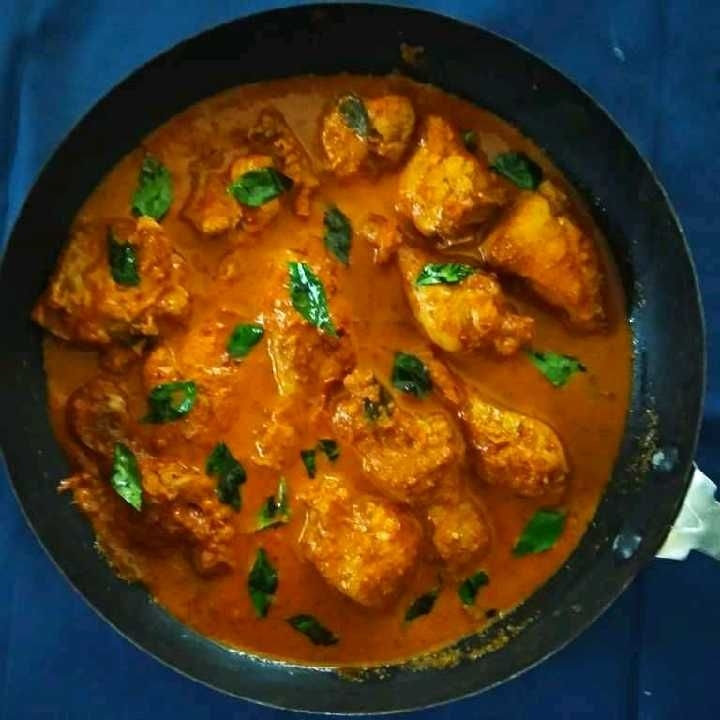
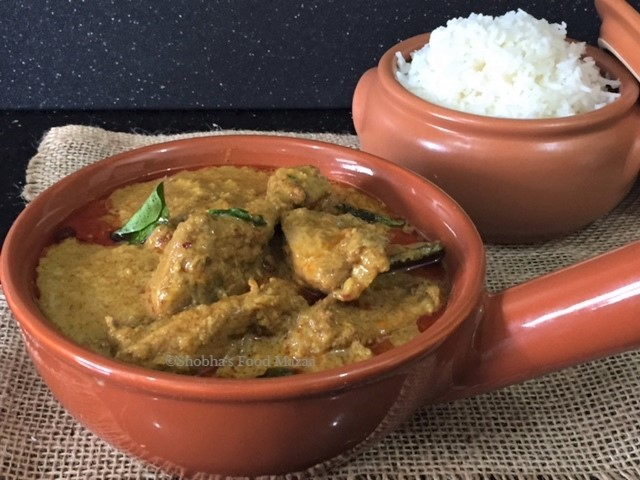
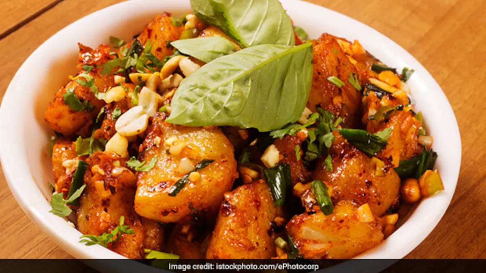
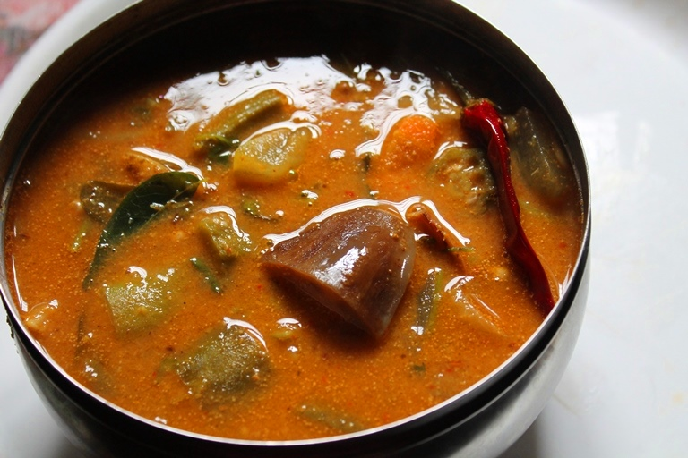

1.Heat oil in pan. Add coriander powder, fenugreek seeds, fennel seeds, pepper corn, mustard seeds, cumin seeds and red chillies and dry roast them. 2.Now add grated coconut, onions and garlic. Saute till the onion turn light brown.
3.Then add water and grind them together. The masala is ready. For the main preparation:
1.Heat oil in pan. Add sliced onions, curry leaves and saute the onions till it looses colour. 2.Then add chopped tomatoes, curry cut chicken, prepared masala, salt, tamarind paste and coconut milk. Mix it well.
3.Cover the pan and cook for about 10 minutes. 4.Korri Gassi is ready to eat.
5.Garnish with curry and coriander leaves and serve hot with traditional Mangalore rice/ roti.
KORRI GASSI(chicken dish)
INGREDIENTS
- 3 tsp coriander powder
- 1 tsp coconut oil
- 1 pinch of fenugreek seeds
- 1/2 tsp fennel seeds
- 8 pieces of pepper corn
- 2 sliced onions
- 1 grated coconut
- 15 red chillies
- 2 Tbsp coconut oil
- 2 chopped tomatoes
- 10 curry leaves
- 2 Tbsp tamarind paste
- 100 ml coconut milk
1.Heat oil in pan. Add coriander powder, fenugreek seeds, fennel seeds, pepper corn, mustard seeds, cumin seeds and red chillies and dry roast them. 2.Now add grated coconut, onions and garlic. Saute till the onion turn light brown.
3.Then add water and grind them together. The masala is ready. For the main preparation:
1.Heat oil in pan. Add sliced onions, curry leaves and saute the onions till it looses colour. 2.Then add chopped tomatoes, curry cut chicken, prepared masala, salt, tamarind paste and coconut milk. Mix it well.
3.Cover the pan and cook for about 10 minutes. 4.Korri Gassi is ready to eat.
5.Garnish with curry and coriander leaves and serve hot with traditional Mangalore rice/ roti.

NEER DOSA
INGREDIENTS
- 1 Cup rice (soaked for 2 hours)
- 1/2 cup coconut, grated
- 1/2 tsp salt
- 5 cups water
- 1 tbsp oil
1.Grind rice and coconut to a very fine paste. 2.Add 5 cups water and salt.
3.Heat a non-stick pan and pour enough batter to cover the pan (turn the pan around quickly so the mixture coats the bottom well without any holes). 4.Lower the heat and cover pan for 1/2 a minute or so.
5.When the edges start lifting, dribble a few drops of oil around and ease the dosa out of the pan and serve.

1.Add cloves, pepper corn, cumin seeds, cinnamon, coriander whole, red chillies and grated coconut to a pan and dry roast them. 2.Put aside to cool. Now add water and grind together. Kundapura paste is ready Prepare the main dish:
1.Heat coconut oil in pan. Add cumin seeds, curry leaves chopped onions and chopped tomatoes. 2.Saute the onions till they turn light brown. 3.Now add chicken, kundapura paste, salt and water and mix it well.
4.Cover the pan and cook the preparation for 15 minutes. 5.Kundapura koli saaru is ready to eat. Serve hot with rice.
KUNDAPURA KOLI SAARU(CHICKEN DISH)
INGREDIENTS
- 6-7 Cloves
- 1 tsp Pepper corn
- 4-5 Cinnamon sticks
- 2 tsp Coriander whole
- 4-5 Red chillies
- 1/2 Coconut, grated
- 1 cup Water
- 4 tbsp Coconut oil
- 1/2 tsp Cumin seeds
- 10-15 Curry leaves
- 4 tbsp Tomatoes, chopped
- 1/2 kg Chicken (cut chicken)
- 6 tbsp Kundapura paste
- 1 cup Water
1.Add cloves, pepper corn, cumin seeds, cinnamon, coriander whole, red chillies and grated coconut to a pan and dry roast them. 2.Put aside to cool. Now add water and grind together. Kundapura paste is ready Prepare the main dish:
1.Heat coconut oil in pan. Add cumin seeds, curry leaves chopped onions and chopped tomatoes. 2.Saute the onions till they turn light brown. 3.Now add chicken, kundapura paste, salt and water and mix it well.
4.Cover the pan and cook the preparation for 15 minutes. 5.Kundapura koli saaru is ready to eat. Serve hot with rice.

1.Boil the potatoes, skin and mash coarsely. 2.Slice the onions. Chop the tomatoes and the coriander leaves. Slit the green chillies. 3.Heat the oil and add the mustard seeds, when they crackle add the skinned black gram.
4.When the gram turns golden, add the onions and the green chillies. Saute the onions till they are translucent. 5.Add the curry leaves and the asafoetida and stir for 2 minutes.
6.Mix in the tomatoes and saute. 7.Add mashed potatoes and stir. 8.Mix all the rest of the ingredients and cook for 10 minutes. 9.Garnish with cashew nuts.
Allugedda (Mashed Masala Potatoes)
INGREDIENTS
- 500 gm potatoes
- 50 ml oil
- 3 gm mustard seeds
- 5 gm skinned black gram
- 100 gm onions
- 5 gm green chillies 1 gm curry leaves
- 5 gm asafoetida
- 100 gm tomatoes
- 5 gm turmeric
- 10 gm chilli powder
- 10 gm coriander leaves
- 50 ml water
- Roasted cashew nuts, garnishing
1.Boil the potatoes, skin and mash coarsely. 2.Slice the onions. Chop the tomatoes and the coriander leaves. Slit the green chillies. 3.Heat the oil and add the mustard seeds, when they crackle add the skinned black gram.
4.When the gram turns golden, add the onions and the green chillies. Saute the onions till they are translucent. 5.Add the curry leaves and the asafoetida and stir for 2 minutes.
6.Mix in the tomatoes and saute. 7.Add mashed potatoes and stir. 8.Mix all the rest of the ingredients and cook for 10 minutes. 9.Garnish with cashew nuts.

1.Cook daal with salt, till absolutely tender, no grains remain. 2.the vegetables are tender, and add tamarind. Heat oil in a saucepan and add the mustard seeds.
3.When they splutter, add the whole red peppers and the curry leaves. Turn around 2-3 times, then add the daal mixture. 4.Bring to a boil, and then simmer for about 5 minutes, Serve hot garnished with the coriander leaves.
UDUPI SAMBAR
INGREDIENTS
- 1 Cup yellow lentils (arhar or toover daal)
- 1 tbsp salt
- 1 tbsp sugar
- 3 tbsp sambar masala
- 3 tbsp thickish tamarind pulp or 1 tsp tamarind concentrate
- 2 tsp mustard seeds
- 7-8 Curry leaves
- 2-3 Whole dry red peppers
- 1 cup mixed vegetables, cut into approx.1
- 1 onion (cut into quarters), large
- 1 tbsp coriander leaves (to garnish)., chopped
1.Cook daal with salt, till absolutely tender, no grains remain. 2.the vegetables are tender, and add tamarind. Heat oil in a saucepan and add the mustard seeds.
3.When they splutter, add the whole red peppers and the curry leaves. Turn around 2-3 times, then add the daal mixture. 4.Bring to a boil, and then simmer for about 5 minutes, Serve hot garnished with the coriander leaves.
Kane Rava Fry(fish dish)
INGREDIENTS
- 100 gm red chilli
- 2 tsp ginger garlic paste
- 1 tsp salt
- 2 Tbsp lime juice
- 1 egg 1 Tbsp cornflour
- 2 lady fish
- Red chilli paste
- A plate of semolina
- Refined oil
1.Boil red chillies in water. 2.Strain the chillies and grind them to a thick paste. 3.Now add gingers, garlic paste, salt, lime juice, egg, and corn flour. For the main preparation:
1.Clean the fish. 2.Apply red chilli paste on the inside and the outside of the fish. 3.Keep the fish aside for marination for about half an hour.
4.Then coat the marinated fish with semolina and deep fry till done. 5.Serve hot.